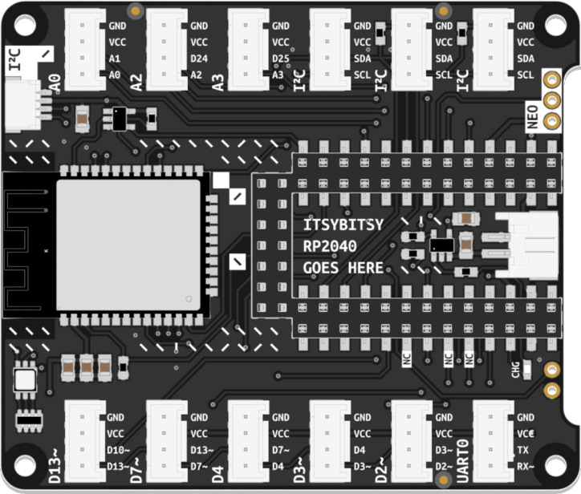
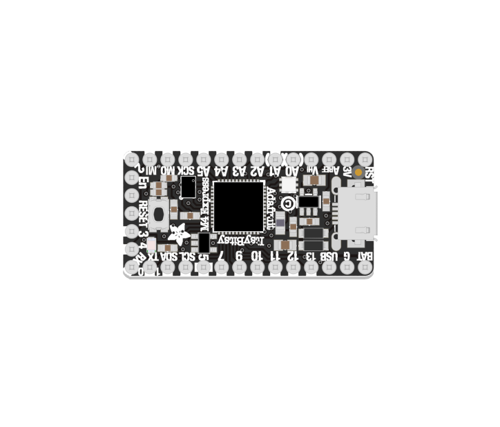
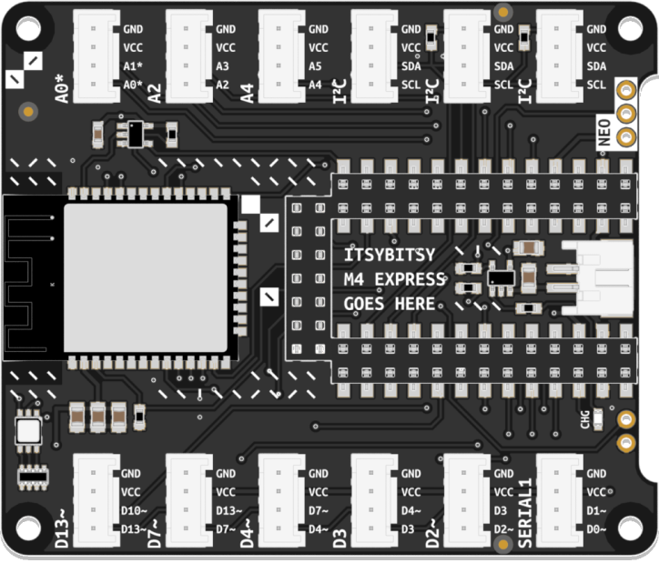
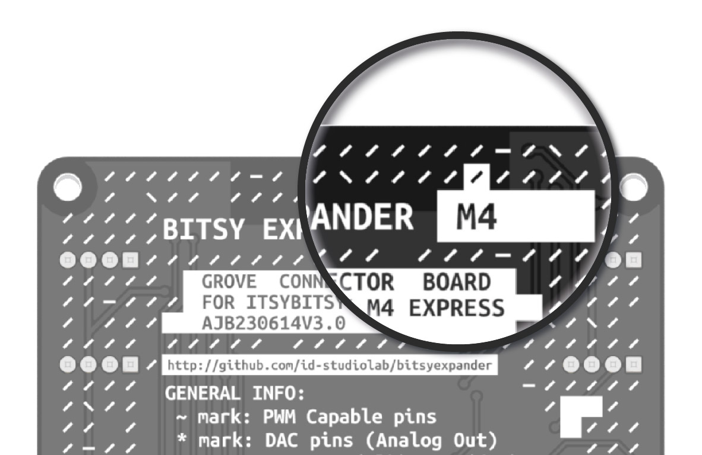

There are multiple, functionally equivalent editions of Connected Interaction Kit. The Core Components you own differ slightly between editions. Your exact components are determined by the year in which you purchased your Connected Interaction Kit. This page is designed to help you identify which version you own.
If in doubt, jump to the bottom of the page for helpful pointers on how to recognize your hardware.
| Microcontroller | Bitsy Expander |
|---|---|
| ItsyBitsy RP2040 | Expander Board for ItsyBitsy RP2040 |
|
 |
| Learn More | Learn More |
| Microcontroller | Bitsy Expander |
|---|---|
| ItsyBitsy M4 Express | Expander Board for ItsyBitsy M4 Express |
|  |  |
| Learn More | Learn More |

The easiest way to identify which Bitsy Expander flavor you own is checking the label on the back of the board. RP2040 or M4 stated on the label indicates the flavor of your Expander. Older M4 Expanders have an empty label (and are also recognizable by the lack of an I²C header at the top).


The ItsyBitsy M4 Express features one (RESET) button. (So do most other ItsyBitsy Development boards, so always verify with the silkscreen.) The ItsyBitsy RP2040 features two (BOOT, RESET) buttons.